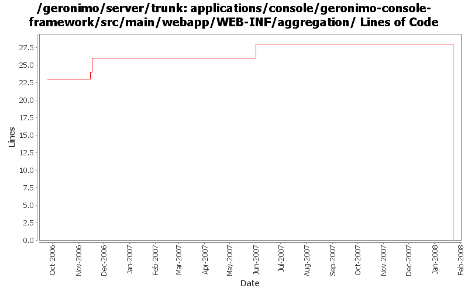

[root]/applications/console/geronimo-console-framework/src/main/webapp/WEB-INF/aggregation

| Author | Changes | Lines of Code | Lines per Change |
|---|---|---|---|
| Totals | 36 (100.0%) | 41 (100.0%) | 1.1 |
| dwoods | 7 (19.4%) | 34 (82.9%) | 4.8 |
| kevan | 17 (47.2%) | 6 (14.6%) | 0.3 |
| ccardona | 1 (2.8%) | 1 (2.4%) | 1.0 |
| pmcmahan | 2 (5.6%) | 0 (0.0%) | 0.0 |
| jdillon | 9 (25.0%) | 0 (0.0%) | 0.0 |
(GERONIMO-3747) Moved applications/* to plugins/*
0 lines of code changed in 9 files:
GERONIMO-3264 Web accessibility updates for Admin Console - part 1
20 lines of code changed in 4 files:
GERONIMO-2375 Console has invalid XHTML in the db pool
12 lines of code changed in 2 files:
GERONIMO-1413 Console needs to set JSP and Servlet contentType to UTF-8
2 lines of code changed in 1 file:
GERONIMO-2537 Update more src file headers note the *extremely* awkward spacing in the previous in the previous header
6 lines of code changed in 17 files:
GERONIMO-1823 Add Embedded LDAP Server Viewer Portlet
1 lines of code changed in 1 file:
GERONIMO-2333 JMX Portlet
0 lines of code changed in 2 files: